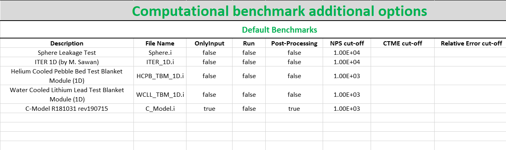
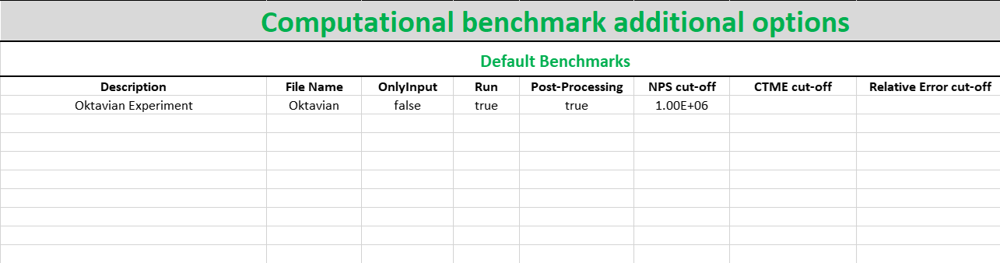
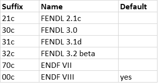
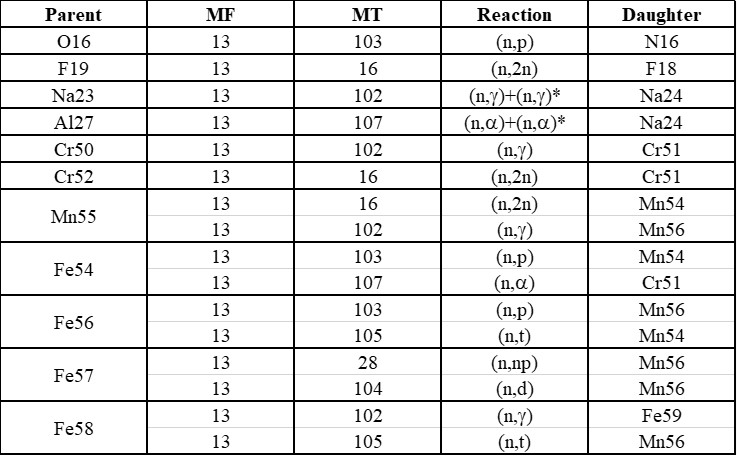

Configuration¶
All configuration files are included in the <JADE_root>\Configuration directory.
In principle, the general user should only operate on the Main Configuration file, while
all other configuration files simply guarantee an additional level of personalization for the user.
Note
In case of user-defined benchmarks suitable Benchmark run configuration and Benchmark post-processing configuration files need to be produced.
Note
Every time a new D1S library is added to the user xsdir, in order to use it in JADE a specific sheet must be added in the Activation File.
Main Configuration¶
The most important configuration file is <JADE_root>\Configuration\Config.xlsx.
This is the only configuration file that the user must modify before operating with JADE.
Herafter, a description of the different sheets included in the file is given.
MAIN Config.¶
{kind=link}
This sheet contains the JADE ambient variables:
- xsdir Path
Absolute path to the xsdir file that has been set to be used during MCNP simulations. If different codes are used that use different xsdir file (e.g. mcnp5 and mcnp6) the user should make sure that all libraries of interest are included in the xsdir file indicated in this variable.
- multithread
Under Windows operative system, MCNP allows to run on multithread using the
taskskeyword. Setting this variable toTrueenables this capability.- CPU
When multithread is set to
True, CPU sets the argument that will be passed totasksduring MCNP runs.
Computational benchmarks¶
{kind=link}
This table collects allows to personalize which computational benchmarks should be included in the JADE assessment. Each row controls a different benchmark, where the following options (columns) are available:
- Description
this is the extended name of the benchmark, this name will appear in specific outputs of the post-processing.
- File Name
name of the reference MCNP input file. These need to be placed in
<JADE root>\Benchmarks inputs.- OnlyInput
when this field is set to
Truethe benchmark input is only generated but not run. This can be useful when the user wants to run the benchmark on a different hardware with respect to the one where JADE is being used.See also
- Run
the benchmark will be run during an assessment only if this field is set to
True. This allows to customize the selection of benchmarks to be run during an assessment or avoid to re-run benchmarks that were already simulated in the past.- Post-Processing
this field works exactly as the
Runone but for the post-processing operations.
The last three options available for each benchmark control the MCNP STOP card parameters that help regulating the simulation lenght:
- NPS cut-off
this is equivalent to the
NPSentry in the MCNP STOP card. It sets a maximum amount of histories to be simulated. Only integers are allowed.- CTME cut-off
this is equivalent to the
CTMEentry in the MCNP STOP card. It sets a maximum computer time after which the simulation will be interrupted. Only integers are allowed.- Relative Error cut-off
this is equivalent to the
Fentry in the MCNP STOP card. The sintax of this entry is:F<k>-<e> (example: F16-0.0005)
This stops the calculation when the tally fluctuation chart of tally k has reached a relative error lower than e.
- Custom input
New in version v1.3.0: This columns allows to provide custom inputs to the different benchmarks. For the moment, this is used only in the Sphere Leakage and Sphere SDDR benchmarks where, if a number n is specified, this will limit the test to the first n isotope and material simulations (useful for testing).
- Code
New in version v1.3.0: This column is needed to specify which kind of code needs to be used for each benchmark. The available codes are defined at the very beginning of the
<JADE root>\Code\testrun.pyby a dictionary linking tags to be used in the config. file and actual names of the executables to be used.CODE_TAGS = {'mcnp6': 'mcnp6', 'D1S5': 'd1suned3.1.2'}
Note
All three STOP parameters can be simultaneously defined during a simulation. The first cut-off criteria reached will be the one triggering the end of the calculation.
Experimental benchmarks¶
{kind=link}
The structure of the sheet is exactly the same as the Computational benchmarks one. Nevertheless, in this table are indicated the settings for the experimental benchmarks.
Libraries¶
{kind=link}
This table simply consists of a glossary where the user can associate more explicit names to the nuclear data libraries suffixes available in the xsdir file. This allows for a clearer post-processing output.
Warning
Do not use invalid filename characters (e.g. "\") in the names assigned to the
libraries!
Activation File¶
{kind=link}
The <JADE_root>\Configuration\Activation.xlsx file stores all the reactions available in the different versions of the D1S-UNED
activation libraries. For each library a sheet needs to be added having as name the
suffix used in the xsdir file for the library. Only three columns in the table are mandatory
and these are the Parent, MT and Daughter ones.
Benchmark post-processing configuration¶
It is possible to control (to some extent) the post-processing of each benchmark via its
specific configuration file. These files are located in the <JADE_root>\Configuration\Benchmarks Configuration
folder and their name must be identical to the one used in the File Name field in the main configuration file
(using the .xlsx extension instead of the .i). These files are available only for computational benchmarks,
since the high degree of customization needed for an experimental benchmark makes quite difficult to
standardize them. While computational benchmarks can be added to the JADE suite without the need for additional
coding, this is not true also for experimental one.
The files contain two main sheets, that respectively regulate the Excel and the Word/PDF post-processing output.
Excel¶

This sheet regulates the Excel output derived from the benchmark. It consists of a table where each row regulates the output of a single tally present in the MCNP input.
Hereinafter a description of the available fields is reported.
- Tally
tally number according to MCNP input file.
- x, y
select the binnings to be used for the presentation of the excel results of the specific tally. Clearly, the binning should have been coherently defined in the MCNP input too. MCNP allows different types of tally binning, they can be accessed using the tags reported in the table below.
Allowed binnings¶ Admissible x and y
Energy
Cells
time
tally
Dir
User
Segments
Multiplier
Cosine
Cor A
Cor B
Cor C
As a result of the selected x and y option, the results of the post-processed tally will be display in a matrix format. In case only a single binning is defined in the MCNP input, the
tallykeyword should be used to signal to JADE to just to print the results in a column format.Important
The main direction of an Excel file is considered to be the vertical one, which is the preferred scrolling direction. For this reason, the x direction is associated with the vertical direction in an Excel file and the y with the horizontal one.
Warning
No more than two binnings should be defined for a single MCNP tally due to the limitation of having to represent 2-D output. JADE may be able to to handle tallies with more than 2 binnings if some of them are constant values.
Tip
If a 1D FMESH is defined in the MCNP input, JADE will automatically transform it to a “binned” tally and handle it as any other tally using the
Cor A,Cor BorCor Cfield.- x name, y name
These will be the names associated to the x and y axis printed in the excel file.
- cut Y
The idea behind JADE is to produce outputs that are easy to investigate simply by scrolling and concentrate on the main results highlighted through colors. Having a high number of bins both in the x and y axis may cause a problem in this sense, forcing the user to scroll on both axis. For this reason, a maximum number of columns can be set to solve this issue. This will cause the tally results not to be printed as a unique matrix but as sequential blocks each with a number of columns equal to cut Y.
Atlas¶

This sheet regulates the Atlas output (Word/PDF) derived from the benchmark. It consists of a table where each row regulates the output of a single tally present in the MCNP input. Hereinafter a description of the available fields is reported.
- Tally
tally number according to MCNP input file.
- Quantity
Physical quantity that will be plotted on the y-axis of the plot. For the x-axis the one specified in the Excel sheet under x will be considered. The quantity selected for plotting will always be the tallied quantity.
Important
when two binnings are specified in the Excel sheet, a different plot for each of the y bins will be produced. For example, let’s consider a neutron flux tally binned both in energy (selected as x) and cells (selected as y). Then, a plot showing the neutron flux as a function of energy will be produced for each cell indicated in the tally.
- Unit
Unit associated to the Quantity.
- <Graph type>
Different columns can be added where it can be specified if a plot in the style indicated by the column name should be generated (
true) or not (false). The available plot styles are Binned graph, Ratio Graph, Experimental points and Grouped bars.See also
Plots Atlas for an additional description of the available plot styles.